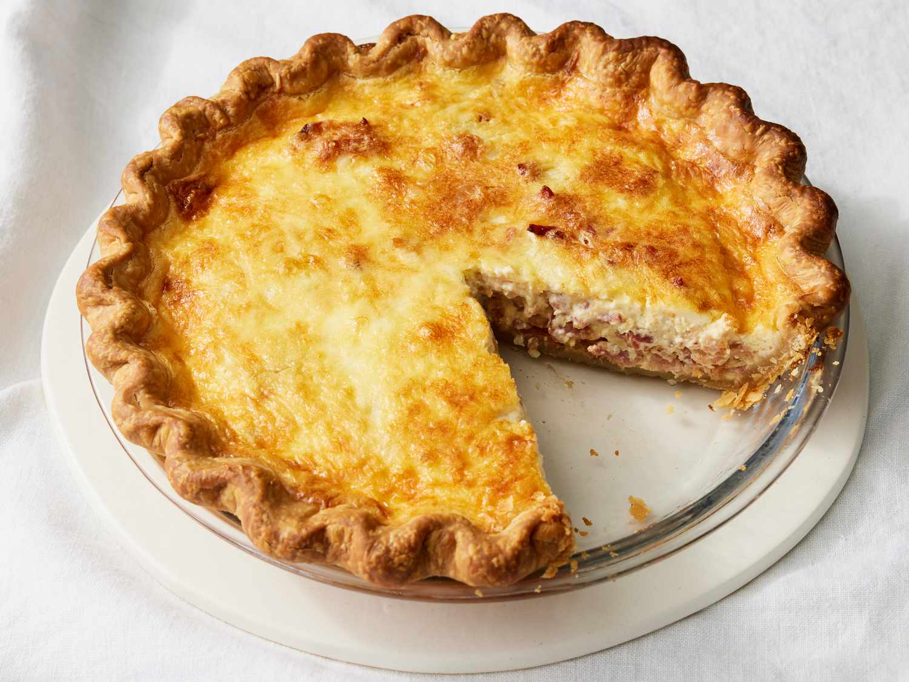

Quiche Lorraine

Ingredients
- Deep dish pie crust
- 4 large eggs
- 8oz of Pancetta
- 4oz of Gruyère
- 1/2cup of chopped shallots
- 5/4cups of heavy cream
- Nutmeg to taste
- Cayenne pepper to taste
- Preheat oven to 400 degrees farenheit and bake the crust in a pie dish until light golen-brown.
If crust inflates, gently poke with a fork until air is expelled. Set aside and reduce oven temp to
325 degrees fahrenheit.
- Cook pancetta until crisp and transfer to a plate leaving approximately 2 tablespoons of fat in the pan.
- Add shallots to pan and sauté in leftover fat until soft and translucent. Do not brown!
Remove pan from heat and set aside.
- In a bowl, whisk eggs, heavy cream, salt, cayenne, and nutmeg until mixture is even
- Layer shallots, bacon, gruyere, bacon, shallots on top of the baked crust. Then, pour in the egg mixture.
Stirring is optional, but not recommended.
- Bake quiche for 30-45 minutes until egg mixture is set and slightly golden.